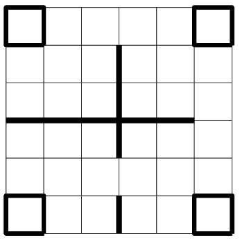
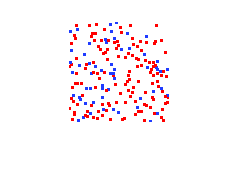

Reinforcement learning, a general and universally useful framework for learning from experience, has been broadly recognized as a critically important concept for understanding and shaping adaptive behavior, both in ethology and in artificial intelligence. A key component in reinforcement learning is the reward function, which, according to an emerging consensus, should be intrinsic to the learning agent and a matter of appraisal rather than a simple reflection of external outcomes.
We describe an approach to intrinsically motivated reinforcement learning that involves various aspects of happiness, operationalized as dynamic estimates of well-being. In four experiments, in which simulated agents learned to explore and forage in simulated environments, we show that agents whose reward function properly balances momentary (hedonic) and longer-term (eudaimonic) well-being outperform agents equipped with standard fitness-oriented reward functions. Our findings suggest that happiness-based features can be useful in developing robust, general-purpose reward mechanisms for intrinsically motivated autonomous agents.
Reinforcement learning, which does take into account behavioral outcomes, yet does not require explicit instruction or error correction, is a universal computational framework for learning, in the sense that any learning problem can be cast as an instance of RL. In its reliance on occasionally delivered scalar rewards, RL mimics learning in humans and other animals. It is an effective method for learning under uncertainty in dynamic environments: the agent learns ‘‘on its own’’ with no examples of correct behavior being provided. It evaluates its actions in relation to observations and outcomes, through continued interaction with the environment
The success of RL depends critically on the formulation of the reward function, which maps outcomes to reinforcement signals and thus constitutes a critical link in the chain of credit assignment. It is possible to design reward functions by hand, but in complex environments it may be infeasible for the designer to handcraft an effective, let alone optimal, reward function.
We propose and test a family of reward functions that involve a simple quantitative model of ‘‘happiness’’; an ongoing, dynamically maintained, multi-component self-estimate of well-being. Our goal is to formulate a reward function that would be general enough to alleviate the need for handcrafting across domains, and also informative enough to be effective in specific tasks.
Reinforcement learning is a general approach to sequential decision problems. By a process of trial-and-error, the agent faced with the decisions must learn a set of policies: a mapping that assigns observed states to actions. At each time step, the agent receives an observation \(s\) from its environment \(E\), takes an action \(a\), receives reward \(r\), and repeats this process until a time horizon. The history at time \(t\), denoted by \(h_t\), is the history of interaction \((s_1,a_1,r_1,\ldots,s_t, a_t, r_t)\). Under this formulation, the problem can be cast as a finite state Markov decision process (MDP) — a tuple \(M=(S, A, T, R, \gamma)\), where \(S\) is a finite set of states; \(A\) is a set of actions; \(T = P(s,s'|a), s \in S, s' \in S, a \in A\) with \(P(s,s'|a)\) is the probability of transitioning to state \(s'\) upon taking action \(a\) in state \(s\); \(R\) specifies the reward distribution; and \(\gamma\) is the temporal discount factor for future rewards.
The goal of the agent is to choose a policy [mapping states to actions] that will maximize its future cumulative rewards, typically the expected discounted sum over a infinite horizon. Formally, this corresponds to maximizing \begin{equation} \sum_{t=0}^ \infty \gamma^t R_{a_t}(s_t,s_{t+1}) \end{equation} where action \(a_t\) is chosen according to some optimal policy, \(R_{a_t}(s_t,s_{t+1})\) is the immediate expected reward received after taking action \(a_t\) from state \(s_t\) to state \(s_{t+1}\), and \(\gamma \in [0,1]\) is the discount factor.
The optimal reward problem (ORP) is an optimization task: choosing the best \(r^* \in R\). ORP maximizes the expected fitness or objective return with respect to a distribution over possible environments \(E\). The optimal reward function \(r^*\) is defined as: \begin{equation} r^* = \textrm{argmax}_{r \in R} \mathcal{F}(r) \end{equation}
As in any search-based approach, the success of the above IMRL framework depends on whether or not the space \(R\) of reward functions that is being searched does in fact contain good candidate functions. Given the central role of emotions in regulating animal behavior, it makes sense to incorporate emotion-based components — in particular, happiness — into the reward functions that populate the space \(R\).
In previous work, we investigated several possible formulations of happiness that involve hedonic and eudaimonic well-being, as well as their role in evolutionary success of agents in a variety of simulated environments. We found that
Here, we use those findings as a conceptual foundation for designing IMRL agents.
We formulate the reward function \(r \in R\) as a linear combination of hedonic and eudaimonic well-being functions, \(\HED\) and \(\EUD\), each of which maps history \(h_t\) to a scalar value: \begin{equation} r(h_t) = \theta_{he} \HED(h_t) + (1-\theta_{he}) \EUD(h_t) \end{equation} where the hedonic/eudaimonic balance parameter \(\theta_{he}\) controls the relative contribution of the two.
The hedonic well-being \(\HED\) consists of three factors: \(\Hs\) based on agent's current state \(s\); \(\Ha\) based on agent's action \(a\) and its current state \(s\); and \(\Hn\) based on affectively important outcomes achieved during the agent's interaction with the environment: \begin{equation} \HED = \theta_s \Hs+ \theta_a \Ha + (1-\theta_s - \theta_a)\Hn \end{equation} The observation-based component is computed as follows: \begin{equation} \Hs^t(s_t,h_t) =\left( \cfrac{1}{\lambda_s}\right) ^ {-c(s_t,h_t,\Delta t)} \end{equation} where \(\lambda_s\) is a positive constant in the range of \((0,1]\) and \(\Delta t\) is the duration of the agent's memory window. The novelty function \(c(s_t,h_t,\Delta t)\) tracks the number of time steps since the agent previously visited state \(s_t\) during history \(h_t\) in the past \(\Delta t\) time window. Here, we chose to only consider the recent history of duration \(\Delta t\) instead of the entire past history.
The action decision-based hedonic component is computed as follows: \begin{equation} \Ha^t(a_t,s_t,h_t) =\left( \cfrac{1}{\lambda_a}\right) ^ {-c(a_t,s_t,h_t,\Delta t)} \end{equation} where the \(\lambda_a\) and \(\Delta t\) parameters are as above and the novelty function \(c(a_t,s_t,h_t,\Delta t)\) is the number of time steps since the agent previously executed action \(a_t\) while in state \(s_t\) during history \(h_t\) in the past \(\Delta t\) time window. The hedonic component associated with extrinsic outcomes is: \begin{equation} \Hn^t = n_t \end{equation} where \(n_t\) represents the affectively important outcomes obtained from the agent-environment interaction at time \(t\). In those of our experiments that involve foraging, we used \(n_t\) to represent the agent's encounters with food or poison.
The agent's eudaimonic well-being \(\EUD\) is then computed from its present value of \(\HED\), its memory of past values of \(\HED\) extending over a number of cycles, and the rates of rise and fall of \(\HED\). The present formulation of eudaimonic well-being is based on our previous work. \begin{equation} \EUD^{t} = (1-\theta_{p}-\theta_{n}) \left( \HED^{t} - \underbrace{\cfrac{1}{\Delta t} \sum_{i=t-\Delta t}^{t-1} \HED^{i}}_{\text{expectation of hedonic}} \right) + \sum_{i=t-\Delta t}^{t} \left( s_{p}\left(\cfrac{d \HED^i}{di} \right) + s_{n}\left(\cfrac{d \HED^i}{di} \right)\right) \\ s_p (x) = \left\{ \begin{array}{lc} \theta_p \cdot x & x\geq0 \\ 0 & x < 0 \end{array}\right. \;\;\;\;\;\; s_n (x) = \left\{ \begin{array}{lc} 0 & x \geq 0 \\ \theta_n \cdot x & x < 0 \end{array}\right. \;\; \end{equation}
where \(\Delta t\) is the extent of the memory window. The step function \(s_p\) selects the weight assigned to upswings of \(H\) and and \(s_n\) — to downswings; \(\theta_p\) and \(\theta_n\) are the respective weights. Thus, agents can in principle value positive and negative events differently.
The intuition behind this formulation is that the agent may have a subjective expectation based on the past interaction with the environment. Its eudaimonic well-being \(\EUD\) is based on its current hedonic well-being and its expectation, as well as on its evaluation of the rise and fall of hedonic well-being. The three terms could be weighted differently.
The \(\epsilon\)-greedy Q-learning algorithm chooses a random action (an exploration step) with probability \(0 \le \epsilon \le 1\) and a greedy action (an exploitation step, which maximizes the expected reward) with probability \(1 - \epsilon\). When \(\epsilon\) is set to \(0\), the choice is always greedy; the balance between exploration and exploitation in that case depends on the structure of the reward function.
The algorithm is intended to be used in conjunction with a variety of reward functions, including notably intrinsic happiness-based ones, listed next. At each step, the agent selects its next action \(a_{t}\), given its past history \(h_t\). If the exploration parameter \(\epsilon\) is nonzero, there is a finite probability of taking a random action; otherwise the action \(a_t\) is chosen that maximizes the sum of the expected reward \(E\left(r(h_{t+1})\right)\) and the value associated with new state \(s_{t+1}\). After taking action \(a_t\) and extending the history \(h_{t+1}\), the agent updates its \(Q\)-table entry for state \(s_t\) and action \(a_t\), taking into account the difference between the actual reward \(r(h_{t+1})\) and expected reward \(E\left(r(h_{t+1})\right)\).
The three types of environments used in our experiments:
|  |  |
Our first goal was to test the newly introduced types of intrinsic reward function in a pure exploration task, in the same setting as investigated in previous IMRL studies.
Mean cumulative fitness (number of squares explored) vs. time, for four types of agents: Qc (\(Q\)-learning with combined well-being reward); Qh (\(Q\)-learning with hedonic reward); \(\epsilon\)Qwb (\(\epsilon\)-greedy \(Q\)-learning with well-being reward); and \(\epsilon\)Qr (\(\epsilon\)-greedy \(Q\)-learning with random reward).
Agents of type Qc were the fastest in attaining the maximum fitness. The maximum possible value of cumulative fitness in this task was 36. Each curve is an average of 100 runs.
Using combined happiness as the reward results in fastest exploration.
Next, we tested the performance of the different reward function (agent) types in a foraging task, which involved both the exploration of the environment and the search for food.
Mean cumulative fitness vs. time, for five types of agents: Qc, Qh, Qf, \(\epsilon\)Qwb, and \(\epsilon\)Qr. Agents of type Qc (\(Q\)-learning with combined well-being reward) performed the best. Each curve is an average of 100 runs.
Using combined happiness as the reward results in the most effective foraging.
A log frequency plot that shows the number of times each location has been visited by the agent in its lifetime. The food boxes in this environment are located in the upper and lower left corners. The three types of agents, from left to right, are: Qh, Qc, and \(\epsilon\)Qf.
In this experiment, we aimed to demonstrate that, unlike fitness-based reward functions, which typically require hand-tuning, the happiness-based intrinsic reward formulation is flexible enough to perform well also in more challenging environments than the previous one.
Mean cumulative fitness vs. time, for five types of agents: Qc, Qh, Qf, \(\epsilon\)Qwb, and \(\epsilon\)Qr. Agents of type Qc performed the best.
In the more challenging environment too, using combined happiness as the reward results in the most effective foraging.
A log frequency plot that shows the number of times each location has been visited by the agent in its lifetime. The food boxes in this environment are located in the upper and lower left corners. The three types of agents, from left to right, are: Qh, Qc, and \(\epsilon\)Qf.
Unlike most of the simulation studies of IMRL, which involve environment maps not larger than \(10 \times 10\), this experiment is situated on a \(100 \times 100\) grid, allowing us to investigate the scaling properties of the IMRL formulations under consideration. The foraging problem here is also more realistic in that it involves both positive and negative rewards, which is the first step toward accounting for approach vs. avoidance behaviors.
Mean cumulative fitness vs. time, for five agent types: Qc, \(\epsilon\)Qwb, Qf, Qh, and \(\epsilon\)Qr. Agents of type Qc outperform others in learning to accumulate food while avoid poison.
Even on the large \(100 \times 100\) grid, using combined happiness as the reward results in the most effective foraging.
In four experiments, in which simulated agents learned to explore and forage in simulated environments, we show that agents whose reward function properly balances momentary (hedonic) and longer-term (eudaimonic) well-being outperform agents equipped with standard fitness-oriented reward functions. Our findings suggest that happiness-based features can be useful in developing robust, general-purpose reward mechanisms for intrinsically motivated autonomous agents.
In natural foraging situations, biological agents must maintain such a balance to survive. The results of Experiments 3 and 4, in which the best performance was achieved by agents that blended short-term (hedonic) and long-term (eudaimonic) intrinsic rewards, suggest a possible role for the components of happiness in playing off novelty against current achievement — a finding that is also consistent with our earlier results involving evolutionary agentbased simulations (Gao & Edelman, 2016), as well as with a broader set of philosophical and psychological considerations (Edelman, 2012).
Last modified: Tue Aug 11 2020 at 22:44:26 EDT